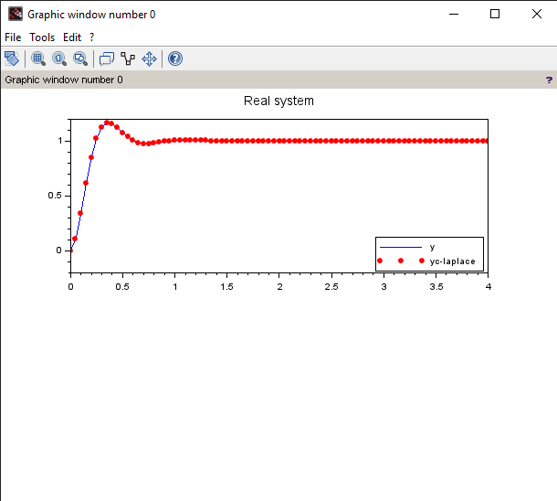
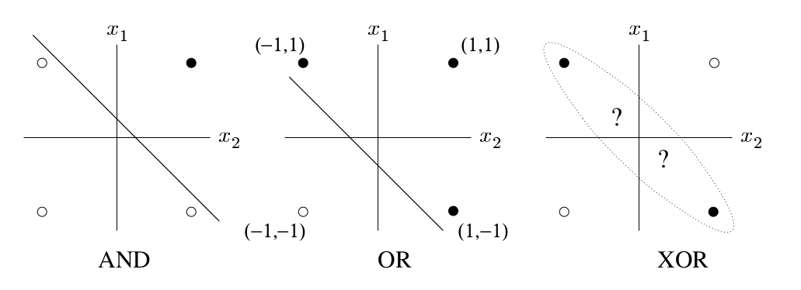

Introduction
- This is the documentation for the Scilab and Python Scripts.
- Tasks involving topics related to Advanced Modelling and Simulation.
Recursive Least Squares
Simulation of “real” system” -> difference equation of 2nd order time delay system
Suggested transfer function
F(z): (T = 0.05 sec, D = 0.5, w0 = 10 / sec)
0.25
F(z) = ---------------------
1.75 z^2 -2.5 z + 1
Methods Used
- conventional parameter estimation e.g. least squares
- Recursive Least squares
- Recursive Least squares with exponential forgetting
System Order Determination for parameter estimation
- Scilab script function
ANN with Backpropagation -> XOR Function(Python file)
- Implementation of specific example
- Scalable “toolbox” for multilayer networks (Created a generic solution myself).
Happy Coding!!!
Least Squares Method
Principles of Parameter Estimation
The parameters of a system model are adjusted by an optimizer. Final goal of the optimization process is the minimization of the error \( \epsilon \) for every defined input signal \( \underline{u} \).
Common method of parameter estimation are:
- least squares method
- steepest descend
- Support vector machine
- Maximum Likelihood Method
LS method
In least squares method, we choose the cost function as quadratic cost function. First of all, it is easier to minimize than many other cost functions. The main reason is however that for a normally distributed noise, it yields asymptotically the best unbiased estimates in terms of the parameter error variance.
Recursive Least squares
The method of least squares assumed that all parameters had first been stored and had then been processed in one pass (batch processing). This
also means that the parameter estimates are only available after the end of the measurement. The non-recursive method of least squares is hence more suitable for offline identification.
If the process however shall be identified online and in real-time, then new parameter estimates should be available during the measurement, e.g. after each sample step. If one would apply the non-recursive method of least squares, one would augment the data matrix \( \psi \) with one row after each sample step and would then process all available data (even from the previous sample steps). Such an approach would require a lot of computations and is hence inappropriate. Recursive methods reduce the computational effort and provide an update of the parameter estimates after each sample step. Previous measurements do not have
to be stored.
Recursive Least Squares with exponential forgetting
If the recursive estimation algorithms should be able to follow slowly time-varying process parameters, more recent measurements must be weighted more strongly than old measurements. Therefore the estimation algorithms should have a fading
memory. This can be incorporated into the least squares method by time-depending weighting of the squared errors.
Hence, one talks about the exponential forgetting memory and \( \lambda \) is termed forgetting factor.
Script
In the following scripts, we will first see how least squares are used to solve static processes/system. Then we will use recursive least squares for parameter estimation of dynamic systems.
Least Squares for Static Process
Problem Statement
- Use least squares method for parameter estimation.
Solution
Step-by-Step Solution
Note: You can run individual commands in
scilab consoleto see what each command does.
-
Initialise variable required and the
yvector.// Least square method clc; clear; clf; //y = [0 1.1 2.4 2.9 4 5.2 6]'; y = [0 1.5 2.4 2.5 4 5.5 6]'; y_avg = sum(y)/length(y); -
Use
simple linear least squaresto find the parameter. Then plotting the graph.u = [0 1 2 3 4 5 6]'; a_hat = inv(u'*u)*u'*y; y_hat = a_hat * u; Q = 0 num_r2 = 0 den_r2 = 0 subplot(2, 2, 1) title("Least square method") for i = 1:length(y) e = y(i) - y_hat(i) Q = Q + e^2; num_r2 = num_r2 + (y_hat(i) - y_avg)^2; den_r2 = den_r2 + (y(i) - y_avg)^2; plot(u(i), y(i), "bx") end coeff_deter = num_r2/den_r2; disp("Least Square method") disp("Estimated parameter: ", a_hat) disp("Value error function: ", Q) //disp("Coefficient of determination R^2: ", coeff_deter) plot(u, y_hat, "r")
-
Use
extended linear model LSfor finding parameters. Then plotting the graph.// Least square method with extended linear model U = [0 1 2 3 4 5 6; 1 1 1 1 1 1 1]'; A_hat = inv(U'*U)*U'*y; Y_hat = A_hat(1)*U(:, 1) + A_hat(2); Q_e = 0; num_r2 = 0 den_r2 = 0 subplot(2, 2, 2) title("Parameter estimation with extended linear model") for i = 1:length(y) e = y(i) - Y_hat(i); Q_e = Q_e + e^2; num_r2 = num_r2 + (Y_hat(i) - y_avg)^2; den_r2 = den_r2 + (y(i) - y_avg)^2; plot(U(i, 1), y(i), "bx") end coeff_deter_e = num_r2/den_r2; disp("Parameter estimation with extended linear model") disp("Estimated parameter: ", A_hat) disp("Value error function: ", Q_e) //disp("Coefficient of determination R^2: ", coeff_deter_e) plot(U(:, 1), Y_hat, "r")
-
Use
non-linear polynomial modelfor parameter estimation.// Parameter Estimation with non linear polynomial model Up = [0 1^2 2^2 3^2 4^2 5^2 6^2; 0 1 2 3 4 5 6; 1 1 1 1 1 1 1;]'; Ap_hat = inv(Up'*Up)*Up'*y; Yp_hat = Ap_hat(1)*Up(:, 2)^2 + Ap_hat(2)*Up(:, 2) + Ap_hat(3); Qp = 0; subplot(2, 2, 3) title("Parameter estimation with non linear polynomial model") for i = 1:length(y) e = y(i) - Yp_hat(i); Qp = Qp + e^2; num_r2 = num_r2 + (Yp_hat(i) - y_avg)^2; den_r2 = den_r2 + (y(i) - y_avg)^2; plot(Up(i, 2), y(i), "bx") end coeff_deter_p = num_r2/den_r2; disp("Parameter estimation with non linear polynomial model") disp("Estimated parameter: ", Ap_hat) disp("Value error function: ", Qp) //disp("Coefficient of determination R^2: ", coeff_deter_p) plot(Up(:, 2), Yp_hat, "r") -
Use
recursive least squaresfor parameter estimation of static processes.// Recursive least squares alpha = 1 m = length(y) S = alpha*eye(m, m) a_hat = zeros(m, 1) Q = 0 num_r2 = 0 den_r2 = 0 // Algorithm for k = 1:m-1 gamma_func(k) = (1/(u(k+1)'*S(k)*u(k+1) + 1))*S(k)*u(k+1); a_hat(k+1) = a_hat(k) + gamma_func(k)*(y(k+1) - u(k+1)'*a_hat(k)); S(k+1) = (eye(1, 1) - gamma_func(k)*u(k+1)')*S(k); end for i = 1:m yr_hat(i) = a_hat(i)*u(i); e = y(i) - yr_hat(i); Q = Q + e^2; num_r2 = num_r2 + (y_hat(i) - y_avg)^2; den_r2 = den_r2 + (y(i) - y_avg)^2; end coeff_deter = num_r2/den_r2; disp("Least Square method") disp("Estimated parameter: ", a_hat) disp("Value error function: ", Q) //disp("Coefficient of determination R^2: ", coeff_deter) subplot(2, 2, 4) title("Recursive least squares") plot(u, yr_hat, "r") plot(u, y, "bx")
Results

Recursive Least Squares
Problem Statement
- Use
recursive least squaresfor parameter estimation of asecond order dynamic system.
Solution
Step-by-Step solution
NOTE: You can run individual commands in
scilab consoleto see what each command does.
-
Clear the
console,command windowandfigures.//************************************************************************ // Recursive least squares method with exponential forgetting clear; clc; clf; figure(0) title("PT2 System") -
Variables of second order time delay system. Simulate the
real system. First, directly given by thesecond order time delay systemequation and then bylaplace equationof second order system. Also, plotting their graphs.// Simulation of “real” system” -> difference equation of 2nd order time delay system // Suggested transfer function F(z): (T = 0.05 sec, D = 0.5, w0 = 10 / sec) // 0.25 // F(z) = —--------------------- // 1.75 z^2 -2.5 z + 1 K = 1; // Proportional gain T = 0.05; // Time step D = 0.5; // Damping (decay of the oscillation) w0 = 10; // Characteristic Frequency t = [0:T:4]; input_step = ones(1, length(t)); // step input input_ramp = t; // ramp input input_noise = rand(1, length(t)); // noise input // choose input signal u = input_step; // Simulation of real system // Second order time delay system // y(t) = K u [ 1 - (1 / sqrt(1 - D^2)) * e^(-D*w0*t) * sin(w0*sqrt(1 - D^2)*t + arccos(D)] y = K*u.*(1 - (1/sqrt(1 - D^2)) .* exp(-D*w0.*t) .* sin(w0*sqrt(1 - D^2).*t + acos(D))); // Using laplace Transfer Function F(s) = K*(w0^2 / s^2 + 2*D*w0*s + w0^2) s = poly(0, 's'); pt2 = w0^2 / (s^2 + 2*D*w0*s + w0^2); f_s = syslin('c', pt2.num, pt2.den); yc = csim(u, t, f_s); subplot(2, 1, 1) plot(t, y) plot(t, yc, "r.") h1 = legend(['y';'yc-laplace'], 4) title("Real system")
-
First we find second order system in
Z-domainbybilinear transformation. We also determine thesystem order. Then, we simulate the system inZ-domain.// discrete time simulation z = poly(0, 'z'); // Using bilinear transformation s = (2/T)*(z - 1)/(z + 1); pt2_d = w0^2 / (s^2 + 2*D*w0*s + w0^2); function [order, num_r, den_r] = system_order_determination(eqn) num_r = roots(eqn.num) den_r = roots(eqn.den) n = length(num_r) d = length(den_r) if n >= d then order = n else order = d end for i = 1:n for j = 1:d if num_r(i) == den_r(j) order = order - 1 end end end endfunction order = system_order_determination(pt2_d) disp(order) f_z = syslin('d', pt2_d.num, pt2_d.den); yd = flts(u, tf2ss(f_z)); subplot(2, 1, 2) plot(t, yd, "r-") title("Discrete time") -
Using
non-recursive least squares methodforparameter estimation.// conventional parameter estimation e.g. least squares (to solve this task the Scilab script estim_a2.sce can partly be used -> see Scilab examples in iLearn course). // parameter estimation with recorded measurement values // 1) determine system output y_meas and X for parameter estimation N = length(t) - 2; // number of measurement points n = 3; // start index, mentioned as i in the slides // output vector Y y_meas = yd(n:n+N-1); // matrix X for paramters a0, a1, b0, b1, b2 X = [-yd(n-2:n-2+N-1)' -yd(n-1:n-1+N-1)' u(n-2:n-2+N-1)' u(n-1:n-1+N-1)' u(n:n+N-1)']; // parameter estimation theta_hat = inv(X'*X)*X'*y_meas'; disp(theta_hat) a0 = theta_hat(1); a1 = theta_hat(2); b0 = theta_hat(3); b1 = theta_hat(4); b2 = theta_hat(5); // check steady state of F(z) y_inf = (b0 + b1 + b2)/(1 + a0 + a1); disp(y_inf) // Simulation F(z) with estimated parameters Num = [b2*z^2 + b1*z + b0]; Den = [z^2 + a1*z + a0]; F_mod = syslin('d', Num, Den); ymod = flts(u, tf2ss(F_mod)); //plot(t, ymod);
NOTE: From
y_infit is clear that we are unable to findparametersas \( (X^T X)^{-1} \) matrix is nearlysingular.y_infshould be 1 as time approaches infinity for aPT2 system. -
Using
recursive least squares methodto solve the problem.// Implementing the method rescursive least squares and plot of the shape of the parameter determination function alpha = 100 m = size(X, 1) l = size(X, 2) S = alpha*eye(m, m) Theta_hat = zeros(m, l) // Algorithm for k = 1:m-1 for i = 1:l gamma_func(k, i) = (1/(X(k+1, i)'*S(k)*X(k+1, i) + 1))*S(k)*X(k+1, i); Theta_hat(k+1, i) = Theta_hat(k, i) + gamma_func(k, i)*(y_meas(k+1) - X(k+1, i)'*Theta_hat(k, i)); S(k+1) = (eye(1, 1) - gamma_func(k, i)*X(k+1, i)')*S(k); end end for k = 2:m a0(k) = Theta_hat(k, 1); a1(k) = Theta_hat(k, 2); b0(k) = Theta_hat(k, 3); b1(k) = Theta_hat(k, 4); b2(k) = Theta_hat(k, 5); Num = [b2*z^2 + b1*z + b0]; Den = [z^2 + a1*z + a0]; F_mod = syslin('d', Num(k), Den(k)); y2mod(k) = flts(u(k), tf2ss(F_mod)); end plot(t(n:n+N-1), y2mod', "b"); h2 = legend(['yd';'recursive parameter estimation'], 4) -
We can use
RLS method with Exponential Forgettingto better trace the original graph. Instead of5th pointon this step-by-step solution, run the following commands.// Implementing the method rescursive least squares and plot of the shape of the parameter determination function alpha = 100 m = size(X, 1) l = size(X, 2) S = alpha*eye(m, m) Theta_hat = zeros(m, l) // Variable for exponential forgetting lambda = 0.1 // Algorithm for k = 1:m-1 for i = 1:l gamma_func(k, i) = (1/(X(k+1, i)'*S(k)*X(k+1, i) + lambda))*S(k)*X(k+1, i); Theta_hat(k+1, i) = Theta_hat(k, i) + gamma_func(k, i)*(y_meas(k+1) - X(k+1, i)'*Theta_hat(k, i)); S(k+1) = (eye(1, 1) - gamma_func(k, i)*X(k+1, i)')*S(k)*(1/lambda); end end for k = 2:m a0(k) = Theta_hat(k, 1); a1(k) = Theta_hat(k, 2); b0(k) = Theta_hat(k, 3); b1(k) = Theta_hat(k, 4); b2(k) = Theta_hat(k, 5); Num = [b2*z^2 + b1*z + b0]; Den = [z^2 + a1*z + a0]; F_mod = syslin('d', Num(k), Den(k)); y2mod(k) = flts(u(k), tf2ss(F_mod)); end plot(t(n:n+N-1), y2mod', "b"); h2 = legend(['yd';'recursive parameter estimation'], 4)
Check out the difference between
RLSandRLS with exponential forgettingusing the Results.
Results
Recursive Least squares
Recursive Least squares with exponential forgetting
System Order Determination for Parameter Estimation
ARMA Model
An ARMA model, or Autoregressive Moving Average model, is used to describe weakly stationary stochastic time series in terms of two polynomials. The first of these polynomials is for autoregression, the second for the moving average.
Calculation of System Model order
In this, we find the zeros or roots of the numerator and denominator polynomial of the ARMA Model. The system order is determined by the number of non-similar roots of the two polynomials.
Script
Problem Statement
- To determine the system order for parameter estimation.
Solution
Step-by-step
Note: You can run individual commands in scilab console to see what each command does.
-
Initial setup for system order determination. Plotting with time steps of
0.05over a period of4 seconds.// ********************************************************************** // System order determination for parameter estimation clear; clc; clf; figure(0) title("PTn System") T = 0.05; t = [0:T:4]; input_step = ones(1, length(t)); -
This function takes in
ARMA modelnumerator and denominator as inputs and output theorderandrootsof numerator and denominator.function [order, num_r, den_r] = system_order_determination(num, den) num_r = roots(num) den_r = roots(den) n = length(num_r) d = length(den_r) //format(25) if n >= d then order = n else order = d end for i = 1:n for j = 1:d real_err = real(num_r(i)) - real(den_r(j)) imag_err = imag(num_r(i)) - imag(den_r(j)) // Set precision as 0.005 if (abs(real_err) < 0.005 && abs(imag_err) < 0.005) order = order - 1 end end end endfunction -
An example
ARMA modelis given to determine its order. You can change it to find the ordera of other system.z = poly(0, 'z'); num = -3 -5*z +2*z^2; den = -10 -6*z +7*z^2; [order, num_r, den_r] = system_order_determination(num, den) disp("System model order: ", order, num_r, den_r) -
Plotting the system in
Z-domain.f_z = syslin('d', num, den); disp(f_z) yd = flts(input_step, tf2ss(f_z)); plot(t, yd, "r-")
Results
Challenge: Try other systems to find their orders.
Artificial Neural Network with Backpropagation
- In this section, we will see how to use ANN to solve XOR Function problem.
Definition of Learning
-
Learning is the formulation of a system reaction according to external signals. Learning is characterized by the repeated impact of external signals on the system and external correction. Learning requires an
adaptive system. -
The external correction (acceptance or punishment) is the task of a teacher who knows the correct systems reaction. Thus the systems gets additional information by the teacher whether the system reaction is right or wrong. This process is called supervised learning.
-
When a system is learning without supervision there is no additional information about the correctness and no external correction of the system behavior.
XOR Problem
- a single layer perceptron cannot represent a simple
exclusive-orfunction.

-
For binary inputs, any transformation can be carried out by adding a layer of predicates which are connected to all inputs. For the specific XOR problem we geometrically show that by introducing hidden units, thereby extending the network to a multi-layer perceptron, the problem can be solved.
-
Adding hidden units increases the class of problems that are soluble by
feed-forward,perceptron- like networks. However, by this generalisation of the basic architecture we have also incurred a serious loss: we no longer have a learning rule to determine the optimal weights!
Backpropagation
-
A
backpropagationnetwork can be compared with a multilayer perceptron. Since there are no setpoint values for the activiation of the hidden neurons availabale for learning a modified learning rule must be developed. -
The central idea behind this solution is that the errors for the units of the hidden layer are determined by back-propagating the errors of the units of the output layer. For this reason the method is often called the
back-propagationlearning rule. -
If the activation function is differentiable we can develope a learning rule for supervised learning. Is activation of the hidden neurons will be calculated from the activation of the output neurons.
-
Typical activation functions:

Script
Problem Statement
- Solve
XORProblem using Artificial Neural Networks with Backpropagation.
Solution
-
To run the solution, extract the zip folder and execute this command:
python3 ANN/ann_xor.py
ann_xor.py
#! /usr/bin/env python3
'''
ann_xor
========
This script allows to train artificial neural network to solve problems
including XOR. This solution is very generalised as multiple hidden
layers could be used to solve other problems as well.
******************************************************
Author: Shivam Shivam (shivam0.mechatronics@gmail.com)
******************************************************
University: Technische Hochschule Deggendorf
--------------------------------------------
'''
# importing the required module
import matplotlib.pyplot as plt
import numpy as np
class NeuronLayer():
'''
This class creates a neuron layer for Artificial neural network.
It returns random weights and random biases for the layer.
:param num_inputs: Number of inputs of a neuron layer
:type num_inputs: int
:param num_neurons: Number of neuron connections to the layer
:type num_neurons: int
'''
#pylint: disable=too-few-public-methods
def __init__(self, num_inputs, num_neurons):
'''Constructor Method'''
# Random variables for weights and bias for the layer
self.weights = np.random.uniform(size=(num_inputs, num_neurons))
self.bias = np.random.uniform(size=(1, num_neurons))
class ArtificialNeuralNetwork():
'''
This class is used to train a neural network of multiple layers.
If the neural network consists of only two inputs, it can plot a
graph showing the boundaries.
:param layers: A neural network of minimum two layers
:type layers: list
:TODO: Try adding changing learning rate to reduce oscillations
'''
def __init__(self, layers):
'''Constructor Method'''
self.layer = layers
self.num_layer = len(layers)
self.layer_output_list = []
self.learning_rate = 0.2
self.losses = []
def sigmoid_activation(self, value):
'''
The sigmoid activation function.
:param value: Sigmoid function is implemented on this.
:type value: `array` or `list` of floats
:return: Value of sigmoid function
:rtype: `array or `list` of floats
'''
return 1 / (1 + np.exp(-value))
def linear_activation(self, value, index):
'''
Linear Activation function. weights * `value` + bias
:param value: Linear Activation function is implemented on this.
:type value: `array` or `list` of floats
:param index: It gives the layers number from which weights and bias
are extracted
:type index: int
:return: Output of linear activation function
:rtype: `array` or `list` of floats
'''
return np.dot(value, self.layer[index].weights) + self.layer[index].bias
def sigmoid_derivative(self, value):
'''
The first derivative of the sigmoid function wrt `value`.
:param value: Sigmoid Derivative is implemented on this.
:type value: `array` or `list` of floats
:return: Output of sigmoid derivative
:rtype: `array` or `list` of floats
'''
return value * (1 - value)
def forward_feeding(self, input_set):
'''
Feed Forward function for learning of neural network. This algorithm
takes updates each layer based on previous layer output by using
``sigmoid_activation()`` and ``linear_activation()`` methods.
:param input_set: Training set input for the training of network
:type input_set: `array` or `list` of floats, ints
:return: Final layer output
:rtype: `array` or `list` of floats
'''
self.layer_output_list = []
for lay in range(self.num_layer):
layer_output = input_set if lay == 0 \
else self.layer_output_list[lay-1]
self.layer_output_list.append(self.sigmoid_activation(
self.linear_activation(layer_output, lay)))
return self.layer_output_list[-1]
def back_propagation(self, output, desired_output):
'''
This method calculates the gradient required to update the
weights of each layer based on back propagation algorithm.
It also calculates the losses in desired output and
calculated output using ``forward_feeding()`` method.
:param output: Calcuated output using ``forward_feeding()``
method
:type output: `array` or `list` of floats
:param desired_output: Target output
:type desired_output: `array` or `list` of floats, ints
:return: gradient required to update the weights of each layer
:rtype: `array` or `list` of floats
'''
# Calculate losses
loss = 0.5 * (desired_output - output) ** 2
self.losses.append(np.sum(loss))
# Final delta, we are moving from back to first
error = (desired_output - output)
delta = (error * self.sigmoid_derivative(output))
delta_list = [delta]
# Calcuate delta for each layer backwards
for lay in range(self.num_layer - 1):
hidden_delta = np.dot(
delta_list[lay], (self.layer[-(lay+1)].weights.T)) \
* self.sigmoid_derivative(self.layer_output_list[-(lay+2)])
delta_list.append(hidden_delta)
# Reverse and return the list
return delta_list[::-1]
def train(self, num_iterations, training_set_inputs, training_set_outputs):
'''
This method trains the neural network for a specific task. It
then updates the weights and biases based on
``back_propagation()`` method.
:param num_iterations: provides the number of interations on
which to train the neural network
:type num_iterations: int
:param training_set_inputs: On which to train the ANN
:type training_set_inputs: `array` or `list` of floats, ints
:param training_set_outputs: On which to train the ANN
:type training_set_outputs: `array` or `list` of floats, ints
'''
for iteration in range(num_iterations):
trained_output = self.forward_feeding(training_set_inputs)
delta = self.back_propagation(
trained_output, training_set_outputs)
for lay in range(self.num_layer):
grad = training_set_inputs.T @ delta[lay] if lay == 0 else \
self.layer_output_list[lay-1].T @ delta[lay]
self.layer[lay].weights += (self.learning_rate * grad)
self.layer[lay].bias += np.sum(
self.learning_rate * delta[lay], axis=0)
print(iteration + 1, trained_output)
def classify(self, input_set):
'''
Return the class to which a datapoint belongs based on
the ANN output for that point.
:param input_set: datapoints for classifications
:type input_set: list of [x, y]
:return: `1` if trained_output > 0.5, otherwise `0`
:rtype: int
'''
if self.forward_feeding(input_set) > 0.5:
return 1
return 0
def plot_2d(self, input_list, output_list, hmin=0.01):
'''
Generate plot of input data and decision boundary.
:param input_list: Training set input for plotting
:type input_list: `array` or `list` of floats, ints
:param output_list: Training set output for plotting
:type output_list: `array` or `list` of floats, ints
'''
# setting plot properties like size, theme and axis limits
plt.figure(figsize=(5, 5))
plt.axis('scaled')
plt.xlim(-0.1, 1.1)
plt.ylim(-0.1, 1.1)
plt.xlabel('x - axis')
plt.ylabel('y - axis')
colors = {
0: "red",
1: "green"
}
# Plot the datapoints and their color based on ``output_list``
for iteration, value in enumerate(input_list):
plt.plot(value[0], value[1], color='black',linestyle='-',
marker='o', markerfacecolor=colors[
output_list[iteration][0]], markersize=15)
# Color the graph based on after training
x_range = np.arange(-0.1, 1.1, hmin)
y_range = np.arange(-0.1, 1.1, hmin)
# creating a mesh to plot decision boundary
x_mesh, y_mesh = np.meshgrid(x_range, y_range, indexing='ij')
classify = np.array([[
self.classify([x, y]) for x in x_range] for y in y_range])
# using the contourf function to create the plot
plt.contourf(x_mesh, y_mesh, classify, colors=[
'red', 'green', 'green', 'blue'], alpha=0.4)
def print_weights(self):
'''The neural network prints its weights'''
print("\nNumber of layers: ", self.num_layer)
layer_number = 0
for lay in self.layer:
layer_number += 1
print("\nLayer: ", layer_number, lay.weights)
def main():
'''Main Function. It trains the XOR Function using
``ArtificialNeuralNetwork()`` class and then plots the boundary
graph.'''
input_list = np.array([[0, 0], [0, 1], [1, 0], [1, 1]])
output_list = np.array([[0, 1, 1, 0]]).T
layer = []
# Create layer 1 (2 inputs, 2 neurons)
layer.append(NeuronLayer(2, 2)) # Hidden layer
# layer.append(NeuronLayer(2, 5))
#layer.append(NeuronLayer(5, 6))
# Create layer 2 (2 inputs, 1 output)
layer.append(NeuronLayer(2, 1)) # Output layer
ann = ArtificialNeuralNetwork(layer)
print("\nStage 1) Before Training (weights): ")
ann.print_weights()
# Increase the number of iterations when using multiple hidden layers
ann.train(8000, input_list, output_list)
print("\nStage 2) After Training (weights): ")
ann.print_weights()
print("\nStage 3) Testing: [1, 1]")
trained_output = ann.forward_feeding([[1, 1]])
print(trained_output)
# Plot losses graph
plt.title('LOSSES')
plt.plot(ann.losses)
# If number of inputs is equal to 2, plot the 2d graph
if len(input_list[0]) == 2:
ann.plot_2d(input_list, output_list)
plt.title('XOR Function')
plt.show()
if __name__ == "__main__":
main()
Results
Challenge: Try adding more
layersorneuronsto solve the same problem. Just take care that you may need to increase the training iterations to solve with more layers. Check code lines 260-265.